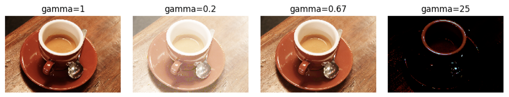
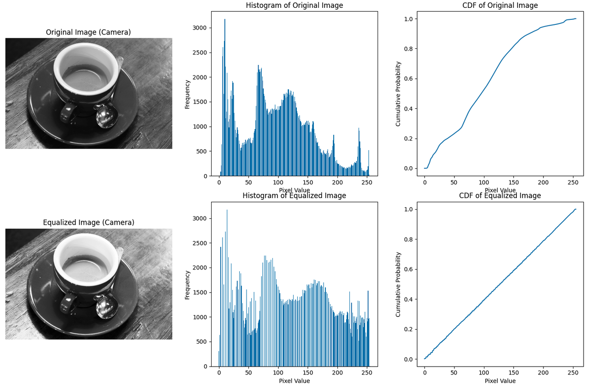

点运算又可以分为线性点运算和非线性点运算。线性点运算的原值和目标值通过线性方程完成转换，典型的如对比度灰度调整、图像反色都属于线性点运算。非线性点运算对应非线性映射函数，典型的映射包括平方函数、对数函数、截取（窗口函数）、阈值函数、多值量化函数等。灰度幂次变换、灰度对数变换、阈值化处理、直方图均衡化是较常见的非线性点运算方法。
- Gamma Transfrom：Gamma 变换
- 直方图均衡化
Gamma变换（幂次变换）：用于改变亮度。👉 代码

直方图就是图片中不同颜色的占比，是一个统计量。
直方图均衡化的步骤：

👉 代码